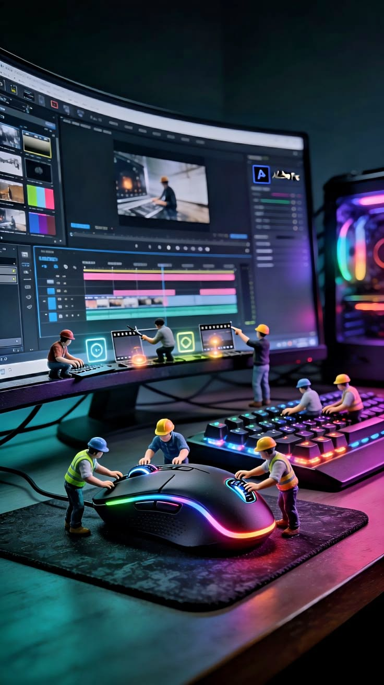

Tentang Kami
Himpunan Mahasiswa Program Studi D3 Komputerisasi Akuntansi merupakan wadah bagi mahasiswa untuk mengembangkan potensi, mempererat solidaritas, serta meningkatkan kemampuan akademik, profesionalisme, dan kepemimpinan di bidang komputerisasi akuntansi.

Mengenal HMP D3 Komputerisasi Akuntansi
Himpunan Mahasiswa Program Studi D3 Komputerisasi Akuntansi merupakan organisasi mahasiswa yang menjadi wadah komunikasi, aspirasi, dan pengembangan diri mahasiswa. HMP hadir untuk mendorong terciptanya lingkungan akademik yang kolaboratif, kreatif, dan berorientasi pada pengembangan kompetensi.
Melalui kegiatan organisasi, mahasiswa diharapkan dapat meningkatkan kemampuan bekerja sama, berkomunikasi, berpikir kritis, serta mengembangkan wawasan di bidang akuntansi dan teknologi informasi.
Wadah Mahasiswa
Menjadi tempat untuk menyampaikan aspirasi dan membangun kebersamaan antarmahasiswa.
Pengembangan Diri
Mendorong peningkatan kemampuan akademik, organisasi, dan keterampilan profesional.
Kolaborasi
Membangun hubungan yang positif melalui kerja sama dan solidaritas mahasiswa.
Kompetensi Digital
Mendukung pengembangan wawasan teknologi informasi yang relevan dengan bidang studi.
Visi dan Misi Organisasi
HMP D3 Komputerisasi Akuntansi berkomitmen menjadi wadah pengembangan kompetensi mahasiswa di bidang pemrograman dan teknologi digital, dengan memperkuat dasar pengetahuan, pola pikir komputasional, serta semangat kolaborasi dan inovasi.
Visi: Pengembangan Kompetensi Digital
Menjadi himpunan mahasiswa yang progresif dalam pengembangan kompetensi pemrograman dan teknologi digital, dengan berlandaskan fundamental yang kuat, pola pikir komputasional, serta semangat inovasi untuk menghadapi perkembangan industri teknologi.
Misi: Teknologi & Komputerisasi
1. Memperkuat logika dan dasar pemrograman.
Membangun pemahaman fundamental pemrograman dan pola pikir
komputasional sebagai dasar penyelesaian masalah.
2. Mengembangkan coding dan aplikasi.
Mendorong peningkatan keterampilan coding serta pengembangan
aplikasi yang kreatif dan bermanfaat.
3. Meningkatkan keterampilan Microsoft Excel dan pengolahan data.
Mendukung kemampuan pengolahan data untuk kebutuhan akademik
dan bidang komputerisasi akuntansi.
4. Mengembangkan kompetensi akuntansi digital.
Mendorong pemahaman dan pemanfaatan teknologi dalam proses
serta sistem komputerisasi akuntansi.
5. Mendorong kolaborasi dan inovasi di bidang teknologi.
Membangun semangat kerja sama, berbagi pengetahuan, dan
kreativitas dalam mengembangkan solusi berbasis teknologi.
Tujuan HMP D3 Komputerisasi Akuntansi
HMP dibentuk untuk mendukung perkembangan mahasiswa melalui kegiatan organisasi yang terarah dan bermanfaat.
Mengembangkan Potensi
Mendukung mahasiswa agar mampu mengembangkan bakat, minat, dan kompetensinya.
Menyalurkan Aspirasi
Menjadi penghubung komunikasi antara mahasiswa dan pihak terkait di lingkungan program studi.
Memperkuat Solidaritas
Membangun rasa kebersamaan dan kepedulian antaranggota serta mahasiswa.
Mendorong Inovasi
Membuka ruang bagi gagasan kreatif dan kegiatan yang memberikan manfaat nyata.
Nilai-Nilai Organisasi
Nilai organisasi menjadi landasan bagi setiap anggota HMP dalam berinteraksi, bekerja sama, dan menjalankan tanggung jawab organisasi.
Integritas
Menjunjung kejujuran, etika, dan tanggung jawab dalam setiap tindakan.
Kolaborasi
Mengutamakan kerja sama, komunikasi, dan saling mendukung untuk mencapai tujuan bersama.
Kreativitas
Menghargai ide baru dan mendorong lahirnya solusi yang inovatif.
Kepedulian
Membangun lingkungan organisasi yang saling menghargai dan peduli terhadap sesama.
Peran HMP bagi Mahasiswa
Sebagai organisasi mahasiswa, HMP memiliki peran dalam mendukung kehidupan akademik, mengembangkan kemampuan organisasi, dan memperkuat hubungan antarmahasiswa.
Wadah Aspirasi
Membantu menyampaikan masukan, kebutuhan, dan gagasan mahasiswa secara konstruktif.
Pengembangan Akademik
Mendukung pertukaran pengetahuan dan kegiatan yang menunjang pembelajaran mahasiswa.
Kepemimpinan
Menjadi ruang belajar untuk melatih koordinasi, pengambilan keputusan, dan tanggung jawab.
Relasi dan Kolaborasi
Mendorong hubungan positif serta peluang kerja sama di lingkungan kampus.